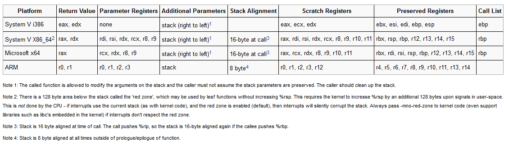

# x64 Function Calling Convention
https://en.wikipedia.org/wiki/X86_calling_conventionshttps://wiki.osdev.org/Calling_ConventionsHere is a nice cheat sheet of calling conventions from the OSDEV Wiki.
## Function Arguments
On x64 there are more registers available.
In order to use the stack less often, a number of function arguments are stored in registers.
This is called
fastcall and it differs between compilers.
### MSVC / Microsoft x64
On Win64, the first 4 arguments of the function are passed into registers:
•
RCX•
RDX•
R8•
R9in that order.
The rest then go on the stack.
### GCC / Linux 64bit
GCC passes the first 6 arguments of the function into registers:
•
RDI•
RSI•
RDX•
RCX•
R8•
R9in that order.
The rest then go on the stack.
## Return Value
On x64, return values are stored in
RAX (and sometimes RDX).
## Stack Alignment
16bit stack alignment